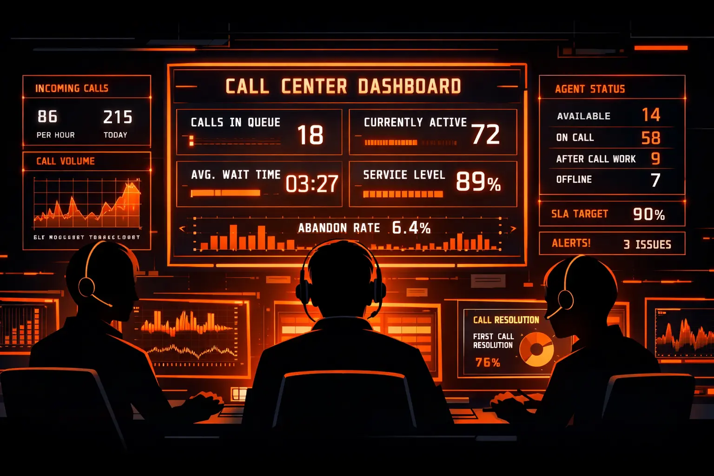
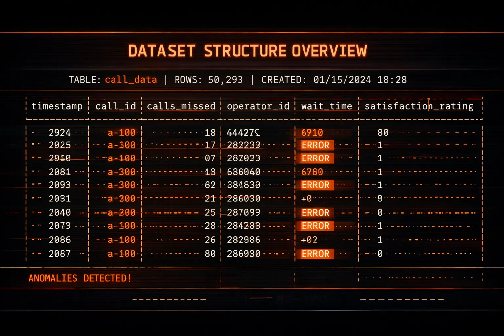
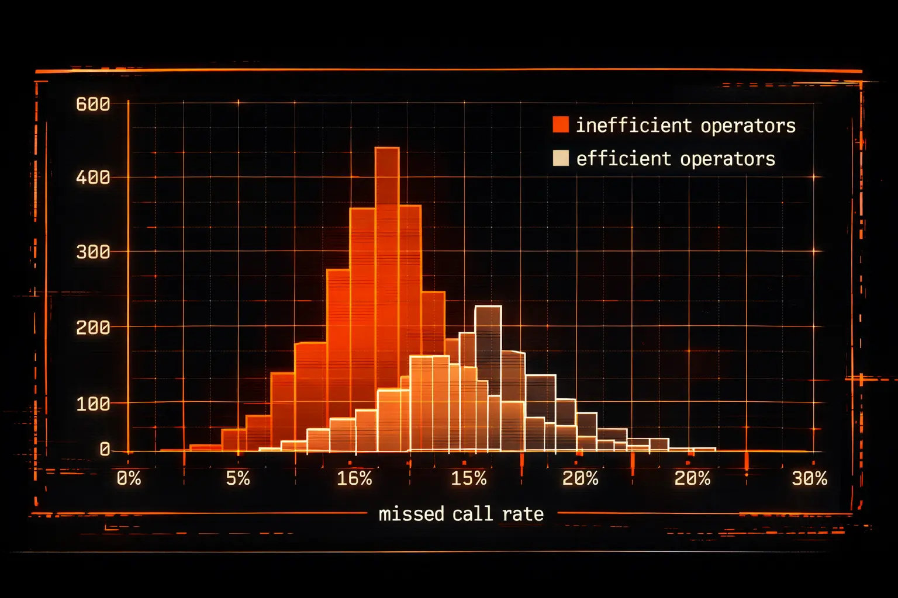
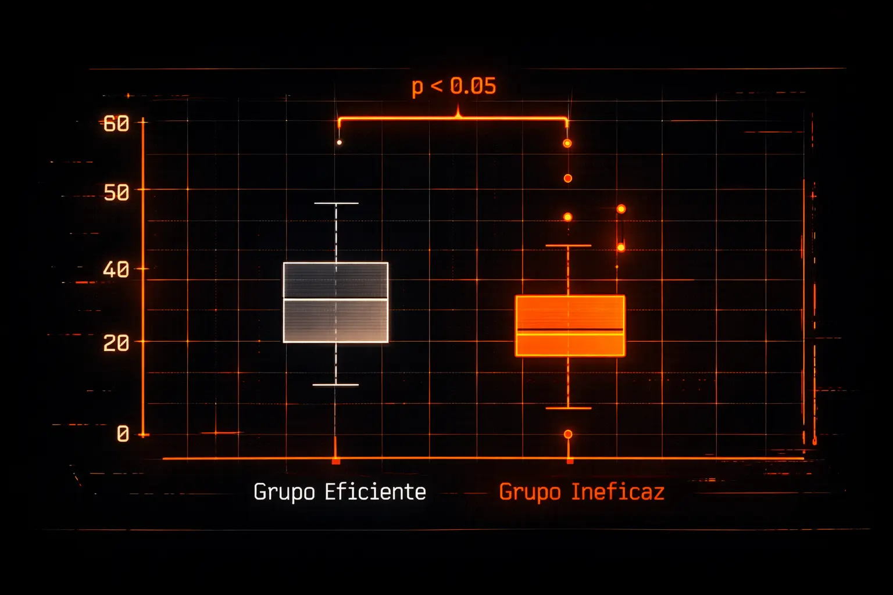
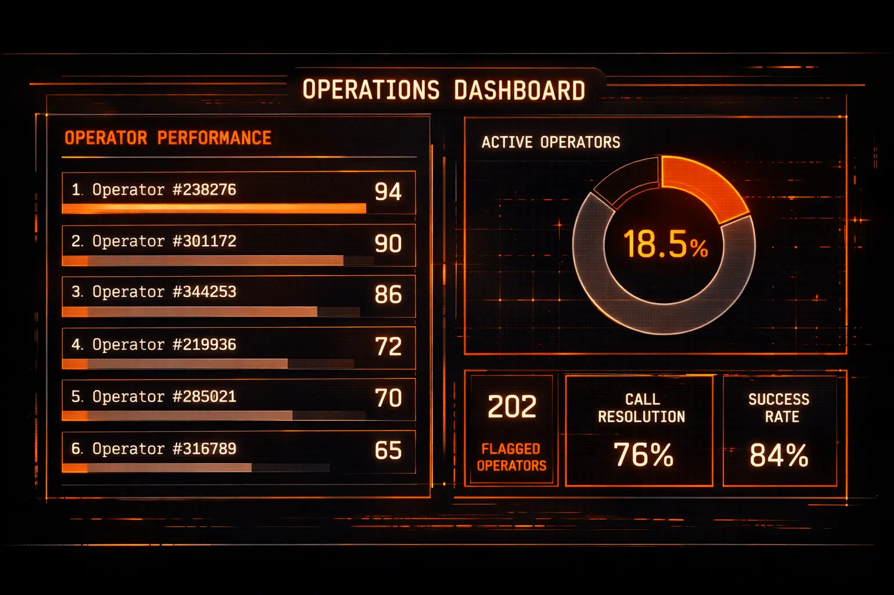

TELECOM_OPERATOR_ANALYSIS
// Identificación de operadores ineficaces en call center
// EL PROBLEMA
Una empresa de telecomunicaciones con un call center de cientos de operadores necesitaba responder una pregunta crítica: ¿quiénes están tirando llamadas y afectando la experiencia del cliente? Sin esa información, capacitar a todos era costoso e ineficiente. El reto era identificar, con evidencia estadística, cuáles operadores tenían bajo rendimiento para priorizar acciones de mejora.

// LOS DATOS
El dataset contenía registros de llamadas por operador: llamadas entrantes, salientes, internas, tiempo de espera, llamadas perdidas y si el operador era interno o externo. Antes de cualquier análisis, realicé limpieza de datos, detección de nulos y outliers, y construí métricas derivadas como tasa de llamadas perdidas por operador.

// EL ANÁLISIS
Definí "operador ineficaz" como aquel con una tasa de llamadas perdidas estadísticamente superior al promedio del grupo. Usé la prueba Mann-Whitney U (no paramétrica) porque la distribución no era normal. Esto me permitió comparar grupos sin asumir distribución gaussiana y validar que las diferencias observadas no eran producto del azar.


// LOS HALLAZGOS
De 1,000+ operadores analizados, 202 fueron clasificados como ineficaces — representando el 18.5% del total. Las diferencias en tasa de llamadas perdidas entre el grupo ineficaz y el resto fueron estadísticamente significativas (p < 0.05). Los operadores externos mostraron mayor concentración en el grupo de bajo rendimiento.
